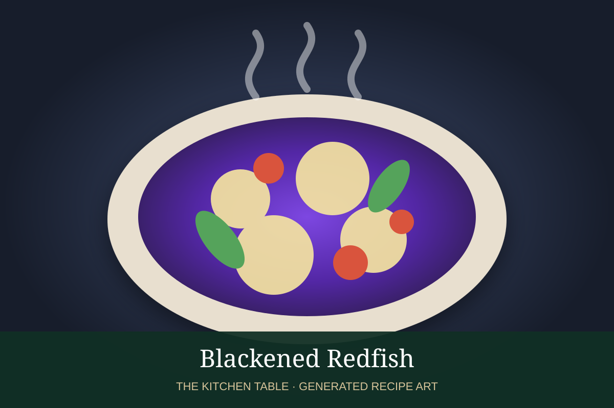

← Back to all recipes
SEAFOOD · CAJUN
Blackened Redfish
Redfish coated in butter and bold Cajun spices, then seared in a smoking-hot cast-iron skillet until deeply blackened outside and moist within.
25 minServes 4

Photo: Wikimedia Commons
Ingredients
- 4 redfish fillets, 6 to 8 oz each
- 6 tbsp unsalted butter, melted
- 1 tbsp sweet paprika
- 1 tsp smoked paprika
- 1 tsp dried thyme
- 1 tsp dried oregano
- 1 tsp garlic powder
- 1 tsp onion powder
- 1/2 tsp cayenne, or to taste
- 1 tsp kosher salt
- 1/2 tsp black pepper
- Lemon wedges, for serving
Preparation
- Open windows and turn the exhaust fan to high; traditional blackening creates substantial smoke.
- Combine paprika, smoked paprika, thyme, oregano, garlic powder, onion powder, cayenne, salt, and pepper.
- Heat a cast-iron skillet over very high heat until extremely hot.
- Dip each fillet in melted butter, then coat generously with the spice mixture.
- Cook 2 to 3 minutes on the first side, drizzle a little butter over the top, then flip and cook until the fish flakes and is just cooked through.
- Serve immediately with lemon wedges.